On
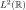
with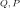
as before, let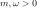
and put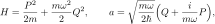
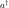
the formal adjoint, on the domain of smooth rapidly decreasing functions. The number operator is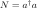
.On that domain,
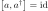
,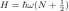
,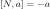
and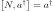
.Expanding the products and keeping the order,
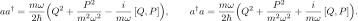
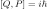
, the two differ by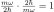
, which is the first identity. The second expression also gives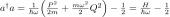
, which is the second identity. Then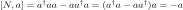
, and the adjoint computation gives .
Every eigenvalue of  on a state in the domain is a non-negative
integer, and if
on a state in the domain is a non-negative
integer, and if
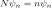
with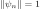
then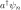
and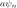
are eigenvectors for and
and
 , with
, with
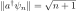
and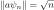
. Consequently the eigenvalues of are
are
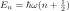
,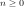
.If
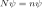
with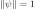
, then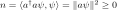
, so eigenvalues are non-negative, and forces
forces 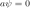
.From ,
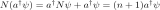
, and similarly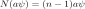
. The norms are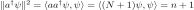
and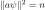
.
Now suppose  were not an integer. Applying
were not an integer. Applying  repeatedly gives
eigenvectors for
repeatedly gives
eigenvectors for
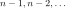
, each non-zero because the norm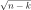
is non-zero as long as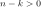
; since is not an
integer the sequence passes below zero without vanishing, producing an
eigenvector with negative eigenvalue – contradicting non-negativity.
Hence  , and gives the
energies.
, and gives the
energies.
The equation has, up to a constant, the unique solution
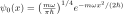
, a unit vector of ; and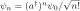
are unit eigenvectors of with energies  .
.
Written out, is the first-order equation
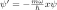
, whose solutions are the multiples of the displayed Gaussian; the normalising constant is the Gaussian integral. The states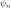
are eigenvectors by induction from the previous theorem, and the normalisation follows from .
The argument never solves the eigenvalue equation for ; it derives
the spectrum from one commutator and a positivity, which is why the same
computation gives the spectrum of angular momentum with
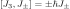
. What it does not give is completeness – that the span – which is a genuine analytic theorem about Hermite functions and is not proved here.